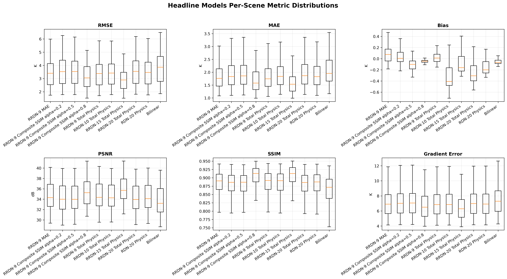
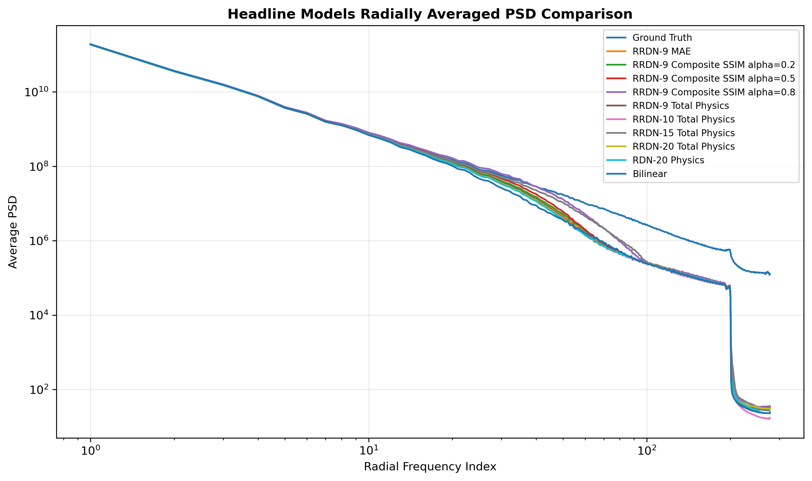
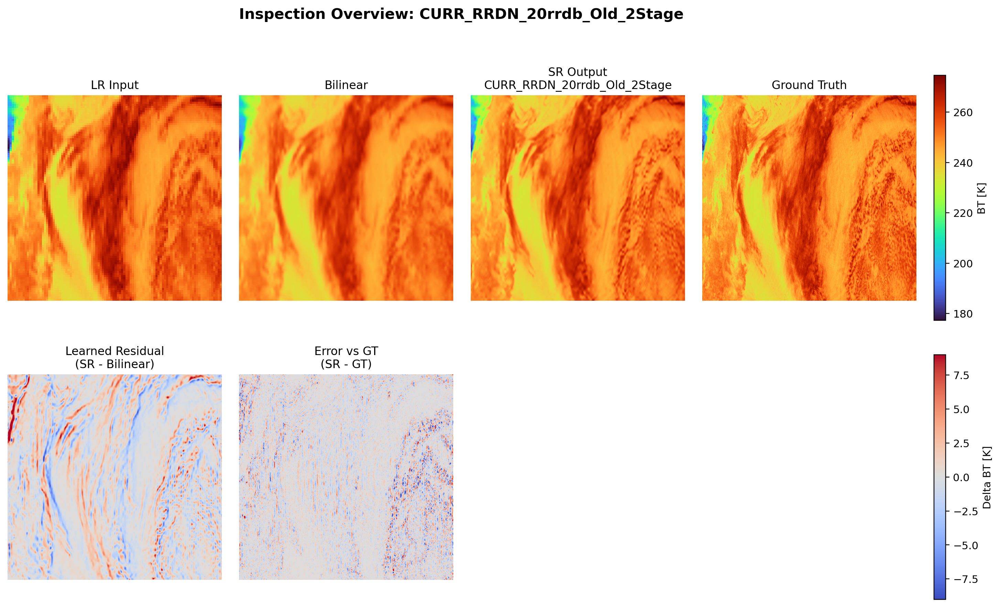

01
Project Goal
This project asks how much fine-scale spatial information can be reconstructed from a low-resolution satellite brightness temperature field. The model receives a single-channel microwave observation and predicts its aligned high-resolution target as a supervised image-to-image regression task.
The engineering work covers HDF5 data pipelines, TensorFlow model development, GPU training, checkpoint evaluation, and reproducible visual analysis. The scientific requirement is more demanding than making an image look sharp: predictions must remain radiometrically consistent, limit temperature bias, and preserve meteorologically meaningful structure.
02
Implemented Models
Experiments compare reconstruction-focused baselines, deeper residual-in-residual generators, structure-aware objectives, and adversarial variants under a shared evaluation workflow.
RDN
Residual Dense Network using dense feature reuse, local feature fusion, and residual learning.
RRDN
Residual-in-Residual Dense Network that groups residual dense blocks inside larger skip paths.
RRDB Depth Variants
Generator variants with different RRDB counts for testing depth, cost, and reconstruction behavior.
Composite SSIM RRDN
RRDN fine-tuning with a composite objective that balances pixel fidelity and structural similarity.
RRDN-GAN
A pretrained RRDN generator refined with reconstruction and adversarial objectives.
PatchGAN-Style CNN
A convolutional discriminator that supplies localized real-versus-generated feedback during GAN training.
03
Contents
04
Dataset
Low-resolution inputs and high-resolution targets are stored as paired numeric arrays in HDF5. The current research dataset is derived from AMSR-2 89 GHz microwave observations using physically based antenna-footprint and sampling simulations, producing aligned 4x training pairs.
| Partition | Purpose | Current documentation status |
|---|---|---|
| Training | Model fitting and augmentation | Exact scene count to be added |
| Evaluation | Shared model comparison | Exact scene count to be added |
| Hurricane validation | Hard-scene and operational analysis | Case inventory to be added |
05
Model Architecture
BT Input
Extraction
Feature Trunk
BT Output
Residual Dense Block
An RDB reuses features through densely connected convolutional layers, fuses the accumulated features, and adds a local residual connection. This supports feature propagation without forcing every layer to relearn the original signal.
Residual-in-Residual Dense Block
An RRDB nests residual dense blocks inside a larger residual path. The hierarchy enables a deeper feature trunk while preserving shorter gradient paths during optimization.
RRDN Generator
The generator combines shallow feature extraction, an RRDB trunk, global residual learning, and an upsampling head that maps the low-resolution tensor to a one-channel high-resolution BT field.
Discriminator
The PatchGAN-style discriminator uses strided and non-strided convolutional stages to score local output regions. Batch-normalized and non-batch-normalized variants are compared during adversarial ablation.
GAN Training Setup
GAN experiments initialize the generator from a reconstruction checkpoint, then optimize it against a combination of reconstruction and adversarial signals. This staged approach reduces instability and keeps radiometric accuracy visible during fine-tuning.
06
Installation / Environment
The research code currently runs in a managed TensorFlow, CUDA, and SLURM environment. The following commands show the intended public setup interface; they are not yet a verified installation path.
conda env create -f environment.yml
conda activate bt-super-resolution07
Usage / Prediction
Planned inference will accept a low-resolution HDF5 input, a selected generator checkpoint, and an output path. Dataset keys, normalization metadata, and patch overlap will be explicit options.
python src/inference/predict.py \
--input sample_data/lr_example.h5 \
--weights weights/rrdn_best.h5 \
--output outputs/prediction.h5Large scenes should use patch-based inference with overlap and careful boundary handling to control GPU memory and reduce patch-edge artifacts.
08
Training
- Create the model: choose an RDN/RRDN architecture and verified RRDB depth.
- Select the objective: compare MAE, composite SSIM, physics-inspired, or staged adversarial losses.
- Configure optimization: confirm optimizer, learning-rate schedule, batch size, normalization, and checkpoint policy.
- Run on GPU/HPC: submit SLURM jobs with explicit CPU, GPU, memory, and TensorFlow thread limits.
- Compare experiments: evaluate selected checkpoints on identical scenes with one metric and plotting pipeline.
bash scripts/run_train_rrdn.sh
bash scripts/run_train_gan.sh| Configuration | Value |
|---|---|
| Optimizer | To be confirmed from final training scripts |
| Learning rate | To be confirmed by training stage |
| Batch size | To be confirmed by model and GPU allocation |
| Checkpoint selection | Validation reconstruction objective |
09
Results
Evaluation combines scalar reconstruction metrics with residual maps and spatial-frequency diagnostics. No final metric values are published here until the checkpoint inventory and experiment table are frozen.
MAE
Average absolute reconstruction error.
RMSE
Reconstruction error that gives larger deviations more influence.
Bias
Average signed prediction-minus-target difference.
PSNR
Signal fidelity relative to the brightness-temperature data range.
SSIM
Similarity in luminance, contrast, and spatial structure.


10
Hurricane Case Study
Hurricane-specific validation tests the models on meteorologically important scenes containing eyewalls, rainbands, sharp gradients, and compact convective features. These cases complement aggregate metrics by showing where a model succeeds or fails spatially.

Final scene identifiers and model comparison notes to be added.
Operational qualitative examples and captions to be added.
Selected cross-sensor figure set to be added.
11
Troubleshooting / Lessons Learned
Start with pixel-wise reconstruction
Establish a stable MAE baseline before introducing composite or adversarial objectives.
Verify normalization statistics
Use the same fitted statistics for training and inference, and confirm units after denormalization.
Check invalid BT values
Inspect NaN, fill, masked, and physically invalid values before they enter a batch or metric calculation.
Use patches for large scenes
Patch-based inference controls memory use; overlap and boundary handling should be tested for seams.
Keep large artifacts out of Git
Do not commit HDF5 datasets, checkpoints, cached predictions, or complete training logs.
Match checkpoints to architecture
RRDB count, convolution depth, normalization, and GAN configuration must match the saved weights.
12
Repository / Artifact Policy
Keep in GitHub
- Source code and configuration templates
- Documentation and selected compressed figures
- Small redistributable HDF5 examples
- Tests and reproducibility notes
Keep in external storage
- Raw and processed satellite datasets
- Trained model weights and checkpoints
- Full experiment and scheduler logs
- Large prediction caches and output collections
13
Engineering Challenges
- Data scale: large HDF5 collections require streamed loading, caching, and explicit artifact ownership.
- HPC reliability: TensorFlow thread pools, GPU memory, SLURM resources, and long runtimes need controlled job environments.
- Experiment traceability: model names must capture architecture, loss, normalization, and training-stage differences.
- Fair evaluation: every checkpoint must use the same scenes, normalization, metric definitions, and plotting logic.
- Scientific interpretation: sharpness alone is insufficient; model outputs require radiometric and spatial validation.
14
Future Work
- Publish a cleaner, tested training and inference pipeline.
- Host selected model weights outside the source repository.
- Expand validation across more storms, seasons, scan geometries, and sensors.
- Freeze architecture and loss ablation tables from audited experiment outputs.
- Build an interactive comparison page for predictions, residuals, and spatial spectra.
- Complete and link a polished paper draft when it is ready for public release.
15
Citation / Acknowledgement
Formal citation information will be added if this project is released publicly as a paper, dataset, or software package. No publication identifier is assigned on this page.
16